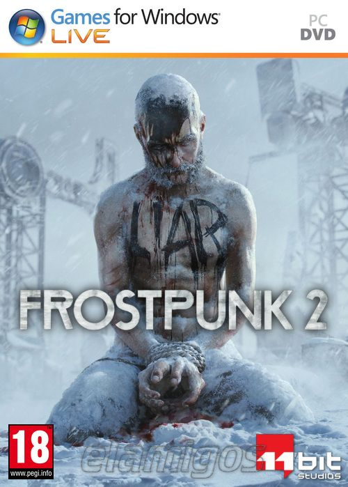

Frostpunk 2 10.0 GB
Género: Estrategia, Gestión de colonias
Desarrolla tu ciudad, amplíala y hazla avanzar en un juego de supervivencia
social ambientado 30 años después de una apocalíptica ventisca que asoló la
Tierra. En Frostpunk 2, te enfrentarás a los peligros de un invierno eterno y a
facciones de un Consejo que vigila cada uno de tus pasos.
.